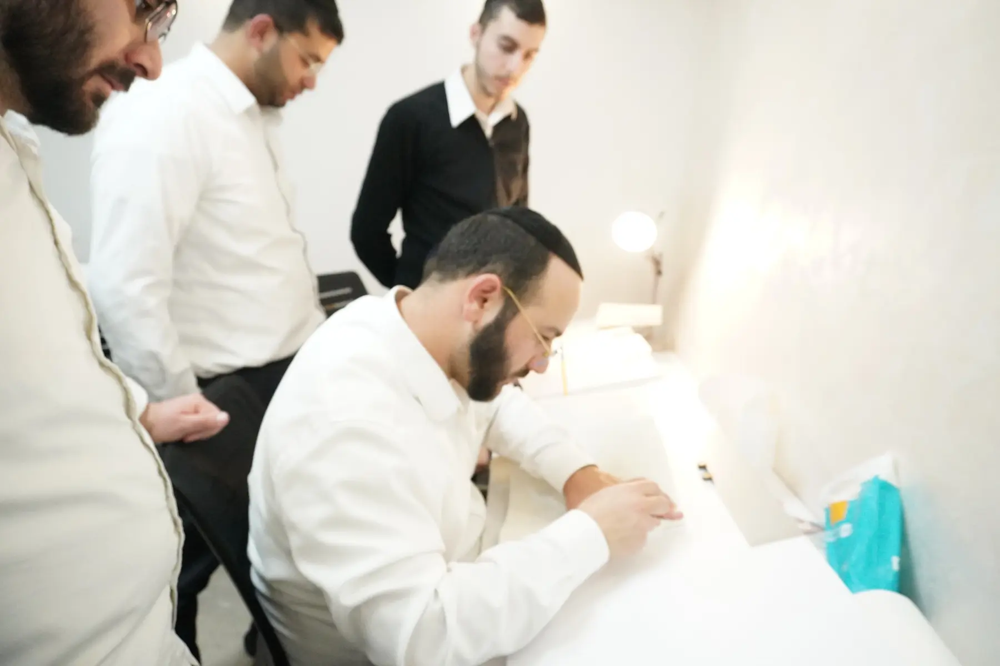
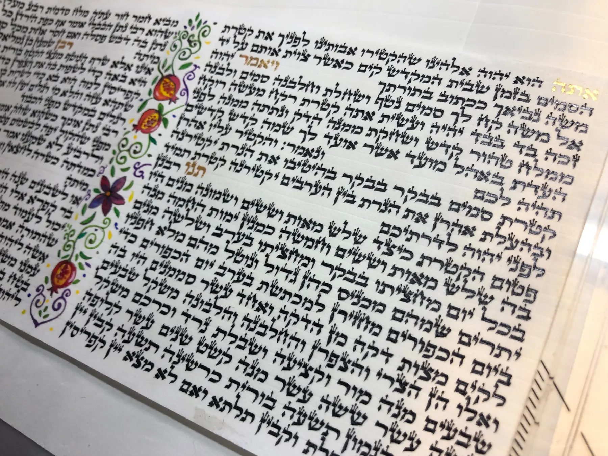
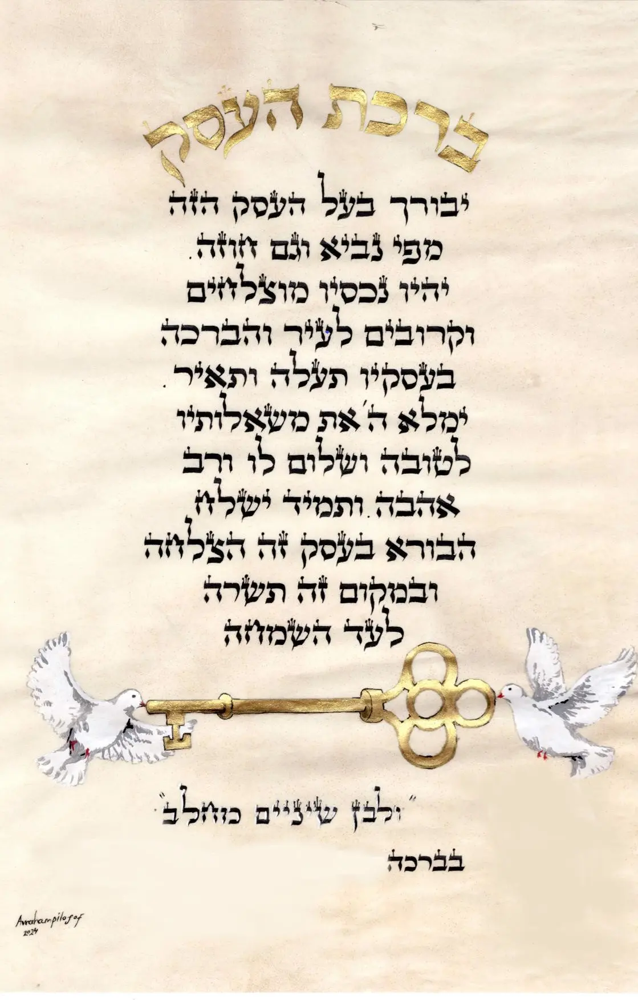
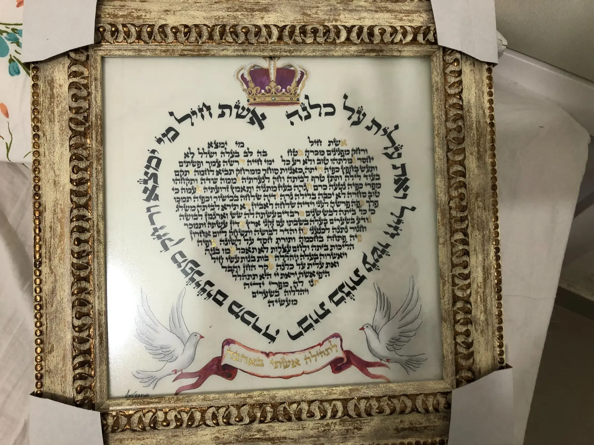
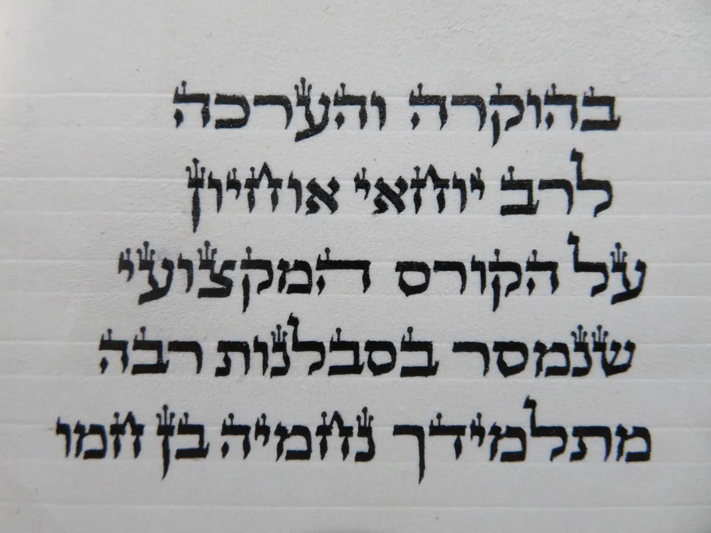
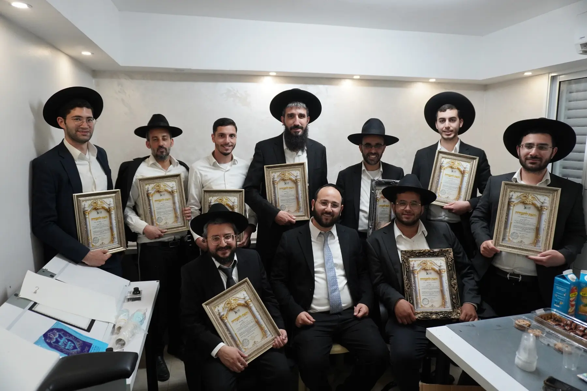

קבוצה קטנה
שישה תלמידים בלבד, כדי לראות את דרך הכתיבה של כל אחד ולא להסתפק בהדגמה כללית.

קורס מקצועי למתחילים · מחזור אלול
ללמוד את המלאכה נכון — החל מהישיבה מול הקלף ועד לבניית כתב הלכתי, מדויק, יפה וזורם.
השיטה
אפשר ללמד כל אות בפני עצמה, אך כך קשה להגיע לכתב אחיד וזורם.
על פי שיטת הרב אוחיון, האותיות מחולקות למשפחות ונלמדות בסדר מובנה. כל משפחת אותיות מבוססת על תנועות ועל יסודות שנלמדו קודם, וכל שלב מכין את היד לשלב הבא.
כך התלמיד אינו אוסף צורות שאינן קשורות זו לזו. הוא רוכש שיטה ברורה, מבין כיצד האותיות נבנות ומפתח בהדרגה כתב בעל אחידות, סדר ואופי מקצועי.
לראות את השיטה בפעולה
צפו בתנועת הקולמוס, בקצב הכתיבה ובאחידות האותיות. אלו היסודות שהתלמידים לומדים לבנות בהדרגה במהלך הקורס.


עוד לפני האות הראשונה
תחילה אני מכוון את צורת הישיבה שלו ומלמד אותו כיצד להתאים את סביבת הכתיבה. רק כאשר היסודות מתייצבים עוברים ללימוד מסודר של צורת האותיות.
הוראה אישית באמת
שני תלמידים עשויים להתקשות באותה אות מסיבות שונות לחלוטין. הניסיון בהוראת הכתיבה מאפשר לזהות את הנקודה המדויקת שמעכבת כל תלמיד ולתת לו את התרגול המתאים.
שישה תלמידים בלבד, כדי לראות את דרך הכתיבה של כל אחד ולא להסתפק בהדגמה כללית.
בחינה של הכתב, זווית הקולמוס, תנועת היד, הישיבה ומנח הקלף.
כתיבה לומדים באמצעות כתיבה. לכן הקורס כולל תרגול רב, הכוונה וקלף בשפע.
התוצאות מדברות
ללא הדמיות וללא דוגמאות מלאכותיות — עבודות אמיתיות שנכתבו בידי תלמידי המכון.






מילים של תלמיד
מכתב תודה שנכתב בידי תלמיד המכון בסיום הקורס — בכתב ידו, על קלף.
״בהוקרה ובהערכה לרבי יוחאי אוחיון, על הקורס המקצועי שנמסר בסבלנות רבה, מתוך יד רחבה ולב חם.״

תוכנית הלימודים
מן הכלים והישיבה ועד לכתב שלם, אחיד ומקצועי.
המטרה
המטרה שלי אינה שהתלמיד יסיים את הקורס כשהוא יודע לצייר אותיות. אני רוצה שהוא יצא עם יסודות נכונים, עם שיטת עבודה ברורה ועם יכולת להמשיך להתפתח גם לאחר סיום הקורס.
השמחה הגדולה שלי היא לראות תלמיד שמבין את המלאכה, בונה כתב אחיד ומקצועי, ובעזרת ה׳ מתקדם להיות סופר שיוכל להתפרנס ממלאכת הקודש בכבוד.

המחזור הקרוב
הלימודים מתקיימים ברחוב בן פתחיה בבני ברק, בשתי קבוצות ערב:
שישה תלמידים בלבד בכל קבוצה.
אפשרויות תשלום נוחות
באשראי או בהמחאות
למי הקורס מתאים?
הקורס מיועד למי שמעולם לא כתב ורוצה ללמוד את המלאכה נכון מן היסוד, וכן למי שהחל ללמוד אך מרגיש שחסרה לו שיטה מסודרת.
אין צורך בניסיון קודם. נדרשות רצינות, התמדה ונכונות לתרגל בין המפגשים.
לפני ההרשמה אפשר לקרוא את המדריך המלא לשלבי לימוד כתיבת סת״ם ולכלים הנדרשים.
לפני ההרשמה נערכת שיחה קצרה כדי להכיר את התלמיד, להסביר כיצד מתנהל המסלול ולבדוק אם הקורס מתאים לו.
בהדרכת
ראש מכון אמנות הסת״ם ומומחה בהוראת הכתב הספרדי
שנות הוראה וליווי תלמידים, לצד מחקר של כתבי־יד ומסורות הכתב הספרדי, התגבשו לשיטת לימוד מסודרת ומעשית — מן היסודות הראשונים ועד לדרך עבודה מקצועית שתלווה את התלמיד במשך שנים.
שאלות נפוצות
כן. הקורס מתחיל מן היסודות ואינו דורש ניסיון קודם.
כדי שאוכל לראות את דרך הכתיבה של כל תלמיד, לזהות מה מעכב אותו ולהעניק לו תיקון אישי בכל שלב.
כן. לצד הכתיבה המעשית נלמדות ההלכות הנחוצות לסופר במהלך עבודתו.
קלף בשפע לאימונים, דיו, קולמוסים, קסתות, ספרי לימוד ושולחן סופרים מקצועי במתנה לנרשמים למחזור אלול.
כתיבת סת״ם היא מקצוע הדורש השקעה, התמדה והמשך התפתחות. מטרת הקורס היא להעניק יסודות ושיטת עבודה שיאפשרו להתקדם לרמה מקצועית, ובעזרת ה׳ להתפרנס מן המלאכה בכבוד.
הצעד הראשון
בשיחה קצרה נכיר את המטרות שלכם, נסביר על דרך הלימוד ונבדוק התאמה למסלול.
מספר המקומות מוגבל לשישה תלמידים בלבד בכל קבוצה.